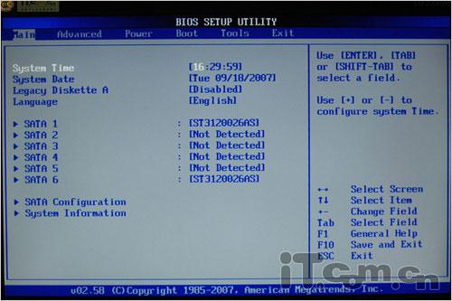
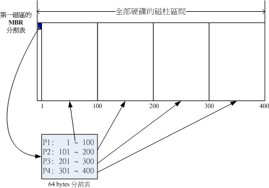
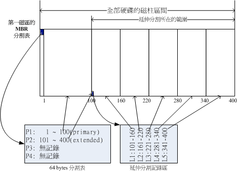
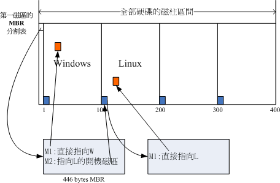

BIOS+MBR

MBR: Master Boot Record
2011年以前的PC系统都采用传统的PC BIOS，这种BIOS的特点是使用主引导记录（MBR）。MBR分区定义每个扇区512字节，磁盘寻址32位地址，所能访问的磁盘容量最大是2.19TB（232 * 512byte）。Windows从MBR启动，因此每个MBR都限制在2.19TB。

MBR：可以安装启动管理程序的地方，有446 bytes；分割表(partition table)记录整颗硬盘分割的状态，有64 bytes，其实所谓的分割只是针对那个64 bytes的分割表进行配置，硬盘默认的分割表仅能写入四组分割资讯，这四组分割资讯我们称为主要(Primary)或延伸(Extended)分割槽。

如上图右下方那个区块有继续分割出五个分割槽， 这五个由扩展分配继续切出来的分割槽，就被称为逻辑分割槽(logical partition)简单的说，整个启动流程到操作系统之前的动作是这样的：
1.BIOS：启动主动运行的韧体，会认识第一个可启动的装置；
2.MBR：第一个可启动装置的第一个磁区内的主要启动记录区块，内含启动管理程序；
3.启动管理程序(boot loader)：一支可读取核心文件来运行的软件；
4.核心文件：开始操作系统的功能...
而boot loader的主要任务有：
提供菜单：使用者可以选择不同的启动项目，这也是多重启动的重要功能
加载核心文件：直接指向可启动的程序区段来开始操作系统
转交其他loader：将启动管理功能转交给其他loader负责

在上图可以发现，MBR的启动管理程序提供两个菜单，菜单一(M1)可以直接加载Windows的核心文件来启动；菜单二(M2)则是将启动管理工作交给第二个分割槽的启动磁区(boot sector)。当使用者在启动的时候选择菜单二时， 那么整个启动管理工作就会交给第二分割槽的启动管理程序了。 当第二个启动管理程序启动后，该启动管理程序内(上图中)仅有一个启动菜单，因此就能够使用Linux的核心文件来启动。